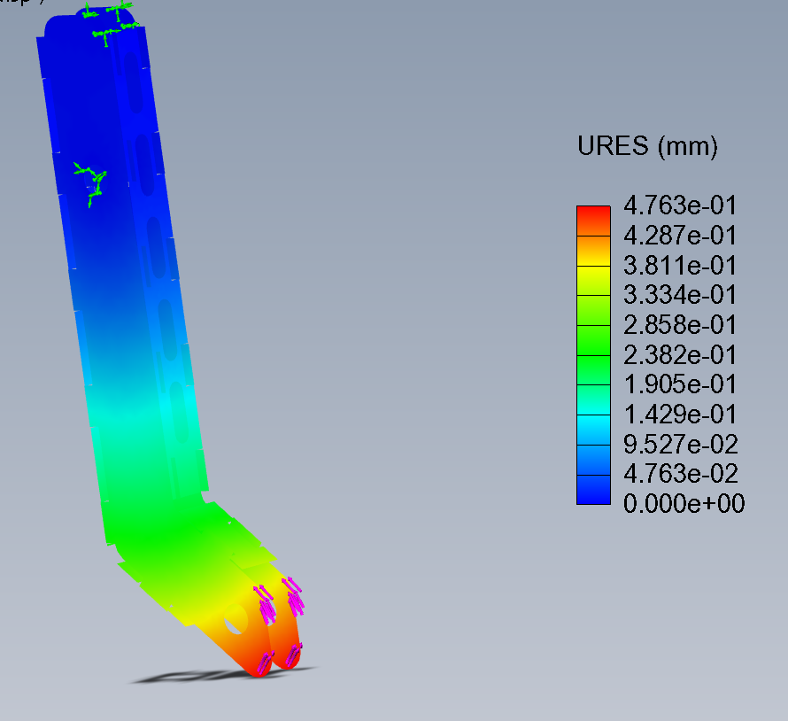
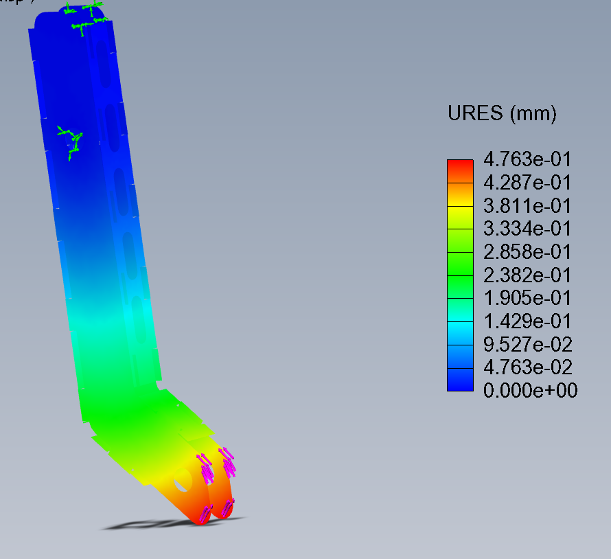

Featured Projects
First Pedal Design
Developed the initial pedal design focusing on ergonomic fit and durability under rugged off-road racing conditions. Key features included adjustability and a lightweight frame.
Skills used: SolidWorks, Mechanical Design, Pedal Mechanics
Steering Column


Designed a custom lightweight steering column for the 2025 Baja vehicle. Focused on strength, ergonomic placement, and integration with the steering assembly and driver cockpit layout.
Skills used: SolidWorks, CAD Assembly Design, Ergonomics
Steering Column Bracket

Engineered a specialized bracket to secure the steering column with optimized support and vibration reduction, ensuring reliability during off-road performance.
Skills used: Structural Design, Finite Element Analysis (FEA) basics, SolidWorks
New Pedal Design

 

Redesigned the pedal system to improve responsiveness and comfort. Integrated lessons learned from the first design with enhanced mechanical efficiency and adjustability features.
Skills used: SolidWorks, Mechanical Redesign, User Experience Improvements
Switch Box

Created a compact and modular switch box to manage four-wheel drive controls and auxiliary systems for the Baja vehicle. Designed for rugged environments with easy access toggle switches and secured wiring integration.
Skills used: SolidWorks, Electrical Systems Design, Mechanical Integration
Steering Yoke


Designed and optimized a steering yoke to connect critical steering components, focusing on strength, minimal weight, and efficient manufacturing for off-road performance.
Skills used: SolidWorks, Mechanical Linkages, CAD Assembly Design